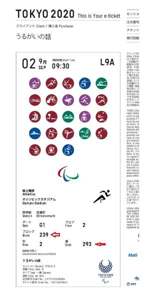
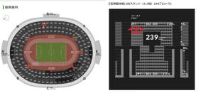

うるがいの話 ある日
最新: パラオリンピックのチケット
うるがいとは 前提知識です
カニの画像をクリックすると『うるがいの話』サイトを表示します
うるがい(ｳﾙｶﾞｲ urugai)とは、『もずくがに』の名前でとても大きくなります。
たながー（ﾀﾅｶﾞｰtanagaa）とは手長えびのことで、何種類かあり大きいのは車 エビぐらいになります。
ぶながー(bunagaa)とは、赤い髪の毛、赤い身体、そして身長は１ｍ２０ｃｍ ぐらい、川の蟹を食べているの目撃された。場所は沖縄県国頭郡大宜味村のと ある村僕の隣近所に住んでいる爺さんから、聞いた話です。
2021年09月07日 (火）
パラオリンピックのチケット
16:21


チケットが手に入る。９月２日（木）仏滅、９時半、陸上競技オリンピックス
タジアム、ゲートＧ１ フロア２ ブロック ２３９ 列２ 番２９３（と２
９４の２枚）。なるほど、で実際にはどの位置だろうとネットで検索すると座
席を表示してくれるサイトがあった。一枚￥２，８００円なのでその位置が妥
当か実際に会場に行きたい人が利用するように、作られたのだろうな。私が生
きている間には日本での開催はないだろう、これで私のオリンピック狂乱は終
了する。